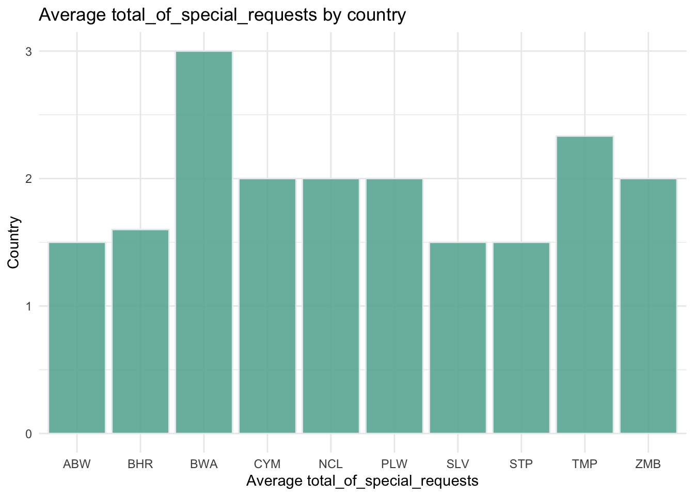
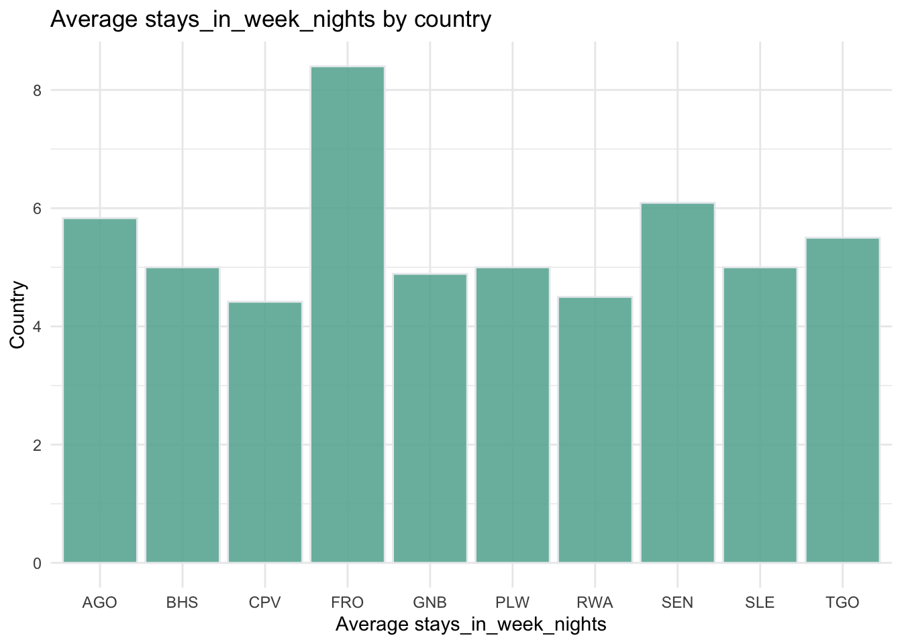

n <- 100 # sample size
m <- seq(1,10) # means
samps <- map(m,rnorm,n=n) Challenge 10
challenge_10
purrr
Challenge Overview
The purrr package is a powerful tool for functional programming. It allows the user to apply a single function across multiple objects. It can replace for loops with a more readable (and often faster) simple function call.
For example, we can draw n random samples from 10 different distributions using a vector of 10 means.
We can then use map_dbl to verify that this worked correctly by computing the mean for each sample.
samps %>%
map_dbl(mean) [1] 0.9578925 2.0817348 2.8952053 3.9744937 5.0065448 5.9074478
[7] 7.0210097 8.2019650 9.0584832 10.0644598purrr is tricky to learn (but beyond useful once you get a handle on it). Therefore, it’s imperative that you complete the purr and map readings before attempting this challenge.
The challenge
Use purrr with a function to perform some data science task. What this task is is up to you. It could involve computing summary statistics, reading in multiple datasets, running a random process multiple times, or anything else you might need to do in your work as a data analyst. You might consider using purrr with a function you wrote for challenge 9.
In challenge 10, I used the same dataset of “hotel_bookings.csv” as in challenge 9 as the original dataset
clean_data <- function(file_path, drop_columns = NULL) {
# Read the CSV file
data <- read_csv(file_path)
# Drop rows with NA values in the 'children' column
data$children[is.na(data$children)] <- 0
# Combine year, month, and day of month into a single date column and then remove the original columns related to date
data <- data %>%
mutate(arrival_date = as.Date(paste(arrival_date_year, arrival_date_month, arrival_date_day_of_month, sep = "-"), format = "%Y-%B-%d")) %>%
select(-arrival_date_year, -arrival_date_month, -arrival_date_week_number, -arrival_date_day_of_month)
# Convert the variables 'is_canceled' and 'is_repeated_guest' to logical (boolean) values
data <- data %>%
mutate(is_canceled = as.logical(is_canceled), is_repeated_guest = as.logical(is_repeated_guest))
# Convert categorical variables into factors
cat_cols <- c('hotel', 'meal', 'country', 'market_segment', 'distribution_channel', 'reserved_room_type',
'assigned_room_type', 'deposit_type', 'customer_type', 'reservation_status')
data[cat_cols] <- lapply(data[cat_cols], factor)
# Drop specified columns if provided
if (!is.null(drop_columns)) {
data <- data %>% select(-all_of(drop_columns))
}
return(data)
}# Load the data
hotel_bookings <- clean_data("_data/hotel_bookings.csv")In Challenge 10, we are asked to use functions from the purrr package, which is designed for functional programming and allows us to apply a function to multiple objects for simpler and more readable code. Therefore, we needed to build new functions compatible with the use of purrr.
In Challenge 9, we created specific task functions, clean_data, calculate_z_score, and plot_histogram, for data cleaning, Z-score calculation, and histogram plotting respectively. However, Challenge 10 is about using purrr for general data science tasks like calculating summary statistics or reading multiple datasets.
Therefore, I created new functions, average_values_by_country and plot_bar, that are more generic, can handle different datasets and columns, and are suited for use with purrr. Specifically, average_values_by_country can compute averages for any given column in any dataset, and plot_bar can plot a bar chart for any two columns in a dataset. These functions can be used with purrr’s map function to apply them to multiple columns, allowing for batch processing.
# Function to compute average values by country
average_values_by_country <- function(data, country_col = "country", value_col, n_top = 10) {
avg_values <- data %>%
group_by(!!sym(country_col)) %>%
summarise(avg_value = mean(!!sym(value_col), na.rm = TRUE), .groups = "drop") %>%
top_n(n_top, avg_value) # Select the top n countries by average value
return(avg_values)
}
# Function to plot a bar chart
plot_bar <- function(data, x_col, y_col, title = "", xlab = "", ylab = "") {
plot <- ggplot(data, aes_string(y_col, x_col)) + # Switch the x and y columns for a horizontal bar chart
geom_bar(stat = "identity", fill = "#69b3a2", color = "#e9ecef", alpha = 0.9) +
theme_minimal() +
labs(title = title, x = xlab, y = ylab) +
coord_flip() # Flip the coordinates so the bars are horizontal
return(plot)
}
# Columns for which to compute average values and plot bar charts
cols_to_analyze <- c("total_of_special_requests", "stays_in_week_nights") # modify as needed
# Compute average values and plot bar charts
average_values_and_plots <- map(cols_to_analyze, ~{
avg_values <- average_values_by_country(hotel_bookings, "country", ., n_top = 10) # Only select the top 10 countries
plot <- plot_bar(avg_values, "country", "avg_value",
title = paste("Average", ., "by country"),
xlab = "Country",
ylab = paste("Average", .))
list(avg_values = avg_values, plot = plot)
})
# Print the results
average_values_and_plots[[1]]$avg_valuesaverage_values_and_plots[[1]]$plot
average_values_and_plots[[2]]$avg_valuesaverage_values_and_plots[[2]]$plot
In this piece of code, I’ve defined two functions: average_values_by_country and plot_bar.
The average_values_by_country function is used to calculate the average values for each country, taking as arguments the data set, the name of the country column, the name of the value column, and a parameter indicating the number of top countries to be selected. This function first groups by the country, then computes the average of the value column, and selects the top n_top countries with the highest average values.
The plot_bar function is used to generate a bar chart for a given dataset, taking as arguments the dataset, column names for the x-axis and y-axis, as well as the title and labels for the axes. Within the function, the geom_bar function from ggplot2 is used to generate the bar chart, and the coordinates are flipped at the end to get a horizontal bar chart.
After these two functions are defined, I’ve selected two columns to analyze: “total_of_special_requests” and “stays_in_week_nights” (modifiable as needed), and used the map function from purrr to apply the previously defined functions to these columns. In the iterative process of the map function, I calculate the average values and draw a bar chart for each column, and finally store the results in a list. Each element in the list is a list containing “avg_values” (data frame of average values) and “plot” (ggplot2 object).
Finally, I print the results, including the data frames of average values and the corresponding bar charts for each analyzed column.
This way, I can get an intuitive understanding of the average performance of each country on these metrics.